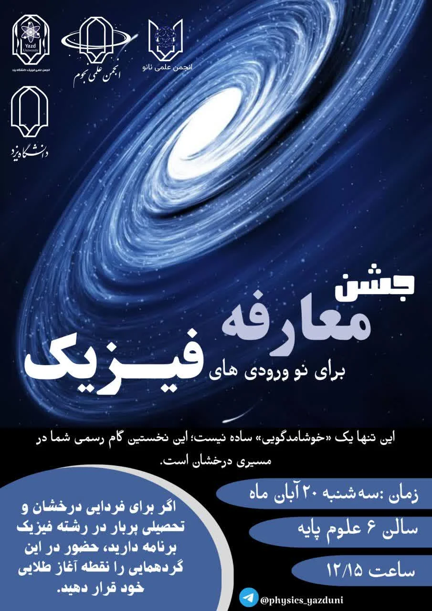

پوستر رویداد
روز معارفه

روز معارفه

به صورت خودکار تغییر میکند
روز معارفه
در این روز پرانرژی و خاطرهانگیز، دانشکده فیزیک میزبان جشن معارفهی دانشجویان ورودی جدید بود. این مراسم با حضور اساتید، دانشجویان سالبالایی و نوورودیها برگزار شد و فضایی گرم و صمیمی را رقم زد. 📸 در تصاویر ثبتشده از این روز، لحظاتی از: - خوشآمدگویی رسمی توسط رئیس دانشکده - معرفی گروهها و انجمن های علمی و پژوهشی فیزیک - پذیرایی و گپوگفتهای دوستانه به چشم میخورد. این جشن فرصتی بود برای آشنایی بیشتر دانشجویان با فضای علمی و اجتماعی دانشکده، و آغاز مسیر جدیدی در زندگی دانشگاهیشان.